Current build · Unreal Engine 5.7 / 5.8
MarketForge: a storefront, designed and built inside Unreal.
The plugin I'm building now is the closest thing in my portfolio to Shop and Locker work: an in-engine storefront and offer editor for Unreal. It has a live storefront preview, a catalog tree, and a product and offer panel. Validation, and the entitlement and fulfilment settings, sit right next to the art.
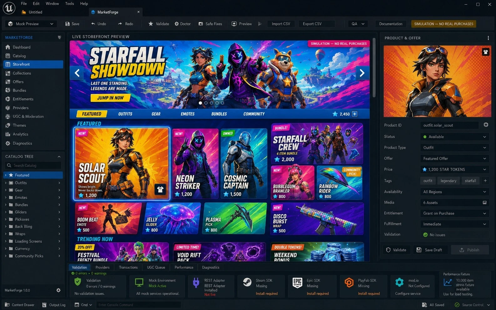
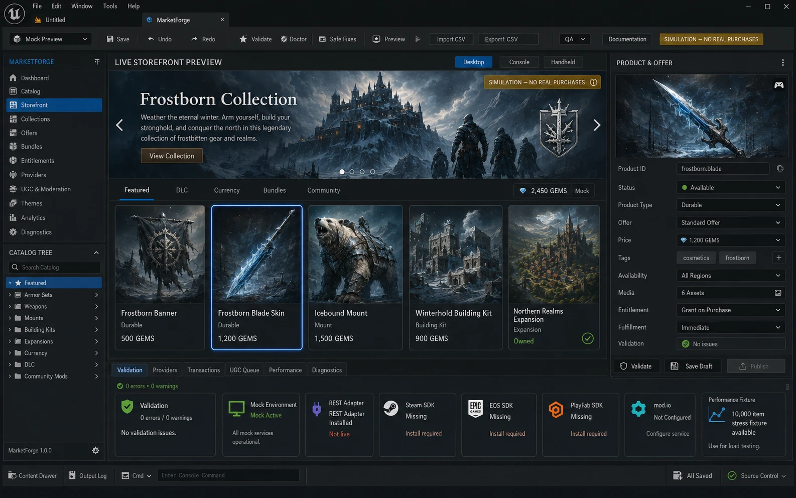
TOP SKILL 01
UI implementation in Unreal Engine
I've worked in Unreal since UE4 on MechWarrior and Dauntless, through three years on Squad, to building and selling my own UMG plugin in UE5.
On shipped studio titles I was the UI designer working inside the engine: building and adjusting widget layouts, checking my art in context, and working through implementation with the UI engineers instead of throwing mockups over the wall. At Offworld on Squad I owned the pipeline from wireframe to Unreal implementation.
In my own work I implement it all. Focusrail is a C++ plugin for UMG, live on Fab. It draws the navigation order over a widget blueprint, lets you test focus by hand, and runs a "Focus Doctor" pass that flags broken or missing navigation. I built it because controller focus is one of the most common ways polished UI breaks when it ships on console.
My usual split: layout, styling and animation stay in the Widget Blueprint where artists can iterate. Behaviour that ticks or is shared moves to C++ or a base class. Input goes through CommonUI so mouse, gamepad and touch behave the same way. And I check overdraw, invalidation and texture memory before calling a screen done, because a beautiful widget that costs a few milliseconds is not finished.
Proof
- Focusrail on Fab ↗ · Unreal Engine 5 plugin, C++ / UMG
- MarketForge ↓ · in-engine storefront plugin, CommonUI + UMG, UE 5.7 / 5.8 (in development)
- One health bar in five runtimes ↗ · Unreal C++/UMG code alongside Unity, Godot, PlayCanvas, web
- Motion + build trailer ↗ · 35-second screen-share timelapse
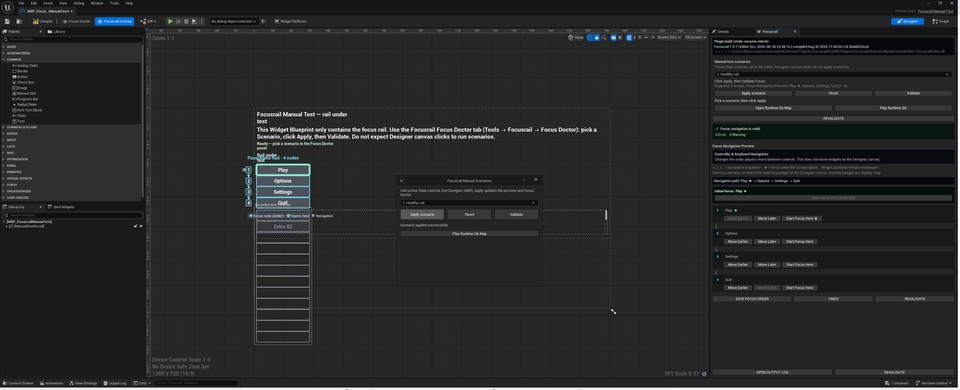
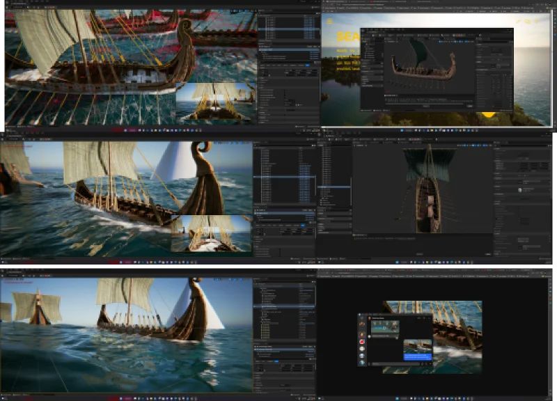
TOP SKILL 02
Design systems & Figma
I think in components first and screens second. A screen is something the system produces, not a one-off painting.
At Offworld I built and maintained the Figma component library for Squad: variants for every state (default, hover, focused, selected, locked, owned), tokens for colour and type, and auto-layout that matched how the widgets would be built in UMG. That last part is what reduced handoff friction. When the Figma structure mirrors the widget hierarchy, implementation becomes translation rather than reinterpretation.
I've also spent a lot of my career inside other people's systems. At UX Magicians I extended brand style guides for Riot, Sony, Twitch and Hasbro without breaking them. At AppLovin I set design standards across nine studios at once, so I know how to add a new pattern to a library properly: check whether an existing component can stretch, propose the variant, document it, and avoid a silent fork.
On precision: I spec to the pixel, account for safe zones and every text length, including German and localisation growth, and design focus states as first-class states, never an afterthought. Evo bringing legacy screens up to a new look and architecture is exactly the kind of systems migration I enjoy.
Proof
- 44 close-ups from my real Figma working files ↗ · not tidied up for a portfolio
- Squad customization ↗ · faction, equipment and ownership states
- MechWarrior 5 screens ↗ · starmap, mission, mech bay
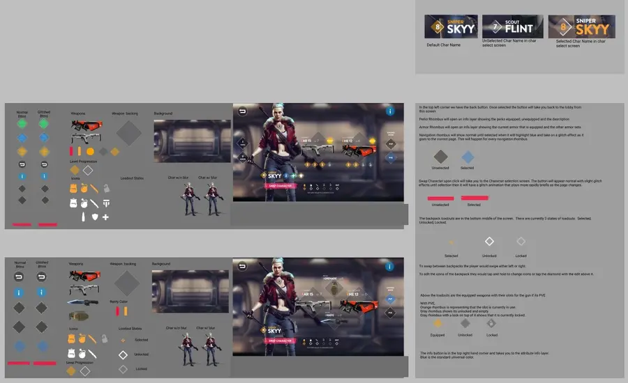
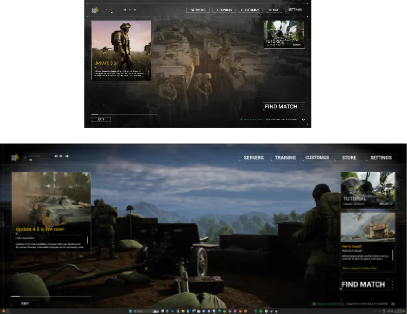
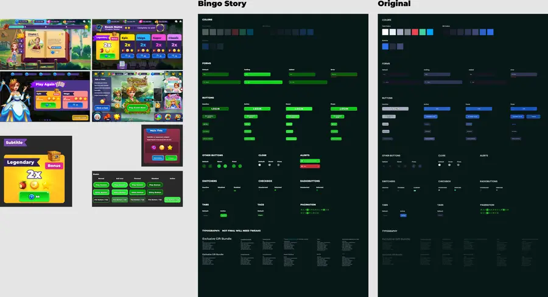
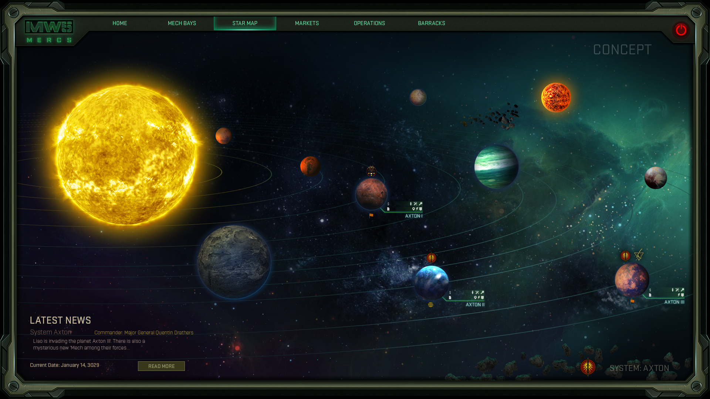
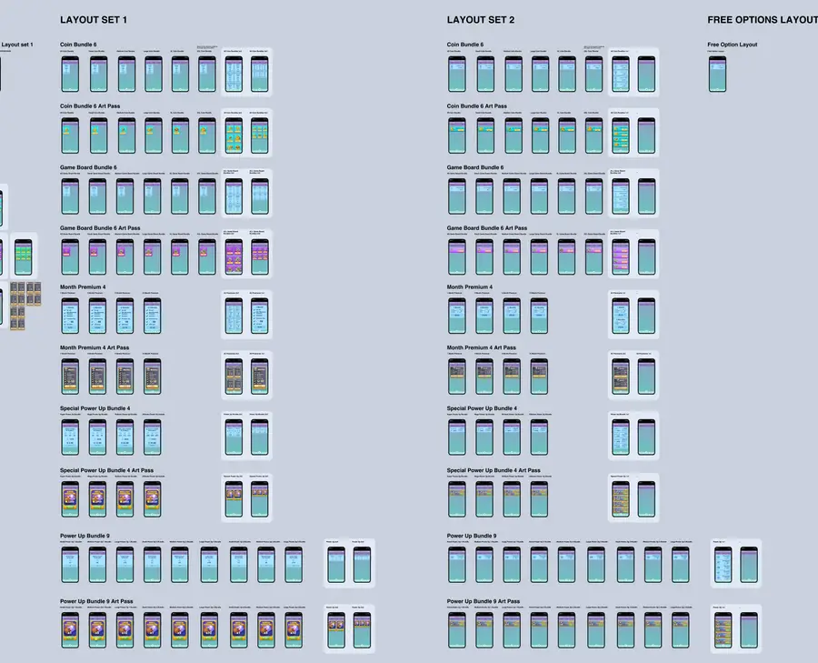
TOP SKILL 03
Motion design & technical UI art
For me, motion is feedback. Every animation should tell the player something: what changed, what they got, what they can do next.
A simple example from my site is the health bar. The ghost segment waits 450 ms, then drains over 600 ms. The delay lets the player read how much they lost before the bar moves. I built that one component in five runtimes, which taught me how differently each engine wants motion authored: UMG widget animations and tick-driven interpolation in Unreal, USS transitions in Unity, tweens on the web.
In Unreal I prefer UI materials for the effects that would otherwise need sprite sheets or many layered widgets: radial fills and cooldowns, gradient masks, glows and shimmer on rarity frames, scrolling patterns. They're driven by a few scalar parameters from Blueprint, which keeps texture memory low and gives artists one dial to tune instead of a pile of assets. The tradeoff I watch for is overdraw on translucent stacks and too many unique material instances on a scrolling list. A shop grid with 60 shimmering tiles needs a different approach than a single hero reward.
Reward moments like chests, loot reveals and level-ups are where this matters most. I designed, animated and coded those in Tropic Tumble, a live free-to-play game with a shop, season pass and chests, so I've tuned that feeling with real players on real devices.
Proof
- Twenty live UI components ↗ · health bar, cooldown ring, loot reveal, radial menu
- Motion & atmosphere studies ↗
- Tropic Tumble, playable in the browser ↗ · chests, pass, merge feedback
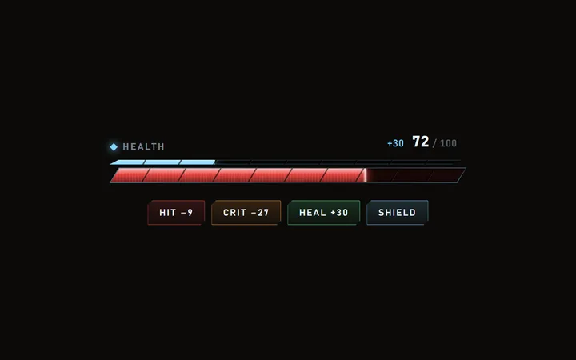
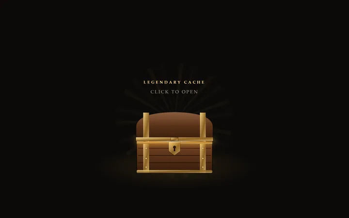
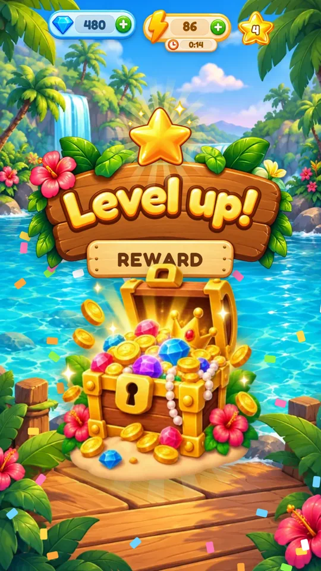
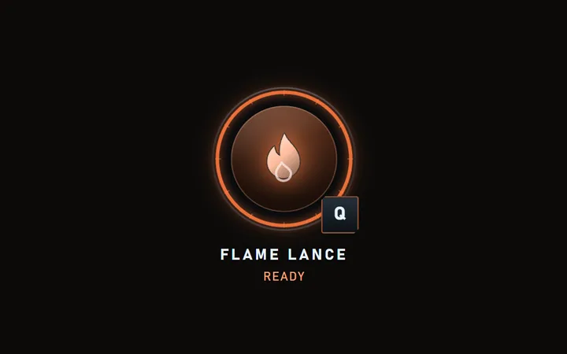
ALSO ON THE LIST · 04
Talking to UI Art and TD in the same meeting
Most of my career has been spent as the person who translates between the mockup and the build.
At Phoenix Labs a teammate wrote that I "created an entire UX workflow and pipeline neither of which previously existed in any form at the studio." At AppLovin I was the single design contact for nine partner studios. In both cases the job was the same: understand what the art needs to achieve, understand what the engine and the schedule allow, and find the version that keeps the important part.
I bring tradeoffs early and in writing, with options instead of a no. I'm comfortable working remotely and asynchronously, and I've been remote-first since 2020. I post progress without being asked, in the time zone the team works in.
“UI, UX, illustration and implementation Remi was a one stop shop to get stuff done. Strong recommend, would hire again.”Keith Kawahata · hired and managed Remi at AppLovin
Where I'd plug in
The initiatives, and the work I've already done that matches them.
Monetization & customization
MarketForge, my in-engine storefront plugin for Unreal. Squad faction and equipment customization with ownership states. Live-game shop layouts. My own shop, chests and season pass in Tropic Tumble. UX Director on monetized mobile titles at AppLovin.
Unifying legacy screens
Brought nine studios to shared design standards at AppLovin. Built Squad's component library. I enjoy taking a screen that grew over the years and rebuilding it on the system.
Content discovery & creators
The Valorant front end and multiplayer lobby, mode-select and matchmaking work. An AI game-creation platform (Game Genius) where creators present their content.
Onboarding & FTUE
First-time flows for Tropic Tumble and Runefjord, learner onboarding in the cyber-training case study, and onboarding friction work on Squad.
Clear controls for guardians
13+ kids' apps shipped for DreamWorks, BBC Kids and Nickelodeon, plus Club Penguin at Disney. Interfaces for audiences where safety and clarity come first.
Every input, every screen
Focusrail exists because focus navigation is easy to get wrong. PC, console, mobile and VR credits, with responsive layouts built into the components.